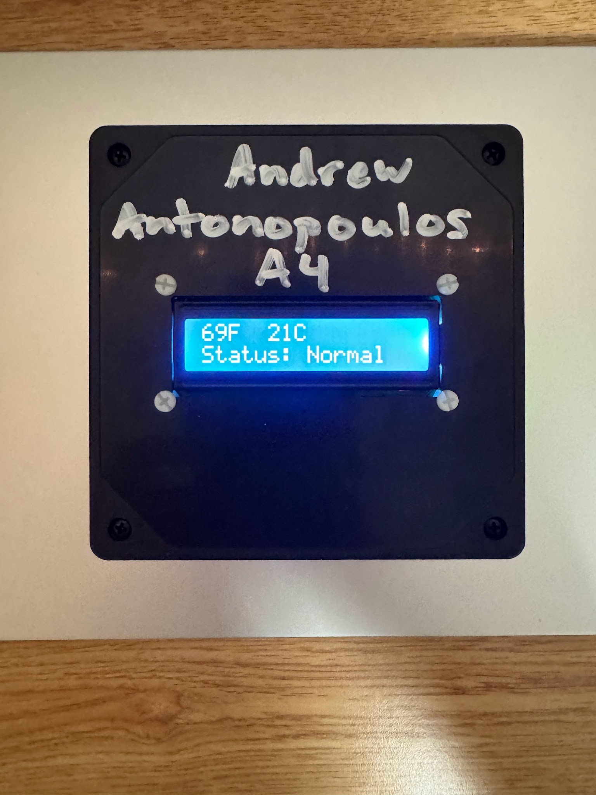

Hybrid Rocket Nozzle Design, Simulation, and Testing
Nozzle design, SOLIDWORKS modeling, and finite element analysis for BURPG’s hybrid introduction project, followed by a successful three-second static fire.

Mechanical Engineering Portfolio
I am a sophomore Mechanical Engineering student at Boston University with a strong interest in manufacturing. I am eager to continue developing my technical skills through coursework and projects, with particular interests in the HVAC, aerospace, and automotive industries.
Working alongside a team designing a boattail to create a gradual transition between ARGO’s 8-inch rocket body and 6.5-inch aft section, with the goal of reducing aerodynamic drag to support the team’s 100,000-foot altitude target. I am responsible for manufacturing ocnsiderations and construction, beginning with a preliminary SOLIDWORKS model and an evaluation of metal additive manufacturing methods, including LPBF/DMLS. After identifying cost limitations, I have shifted focus to formed sheet metal and carbon-fiber fabrication. I am currently calculating structural loads to assess sheet-metal feasibility and determine an appropriate thickness, alongside researching carbon-fiber layering over a 3D-printed model.
Right now, I am in the design phase of this project working on SOLIDWORKS to create a model of a mallet-style putter head. I am also researching general loft and lie angles (which should be measured and specific to a player's stroke, but I do not have the equipment or ability to do so), alongside the optimal location for the center of gravity. My main focus for this project is the manufacturing phase, where I aim to learn how to use a CNC mill to machine my part.
Working on quick-disconnect selection to connect ARGO vehicle and ground support equipment. After a cost and risk study on keyed vs non-keyed stems weighing mistake-proofing against cost, availability, and lead time, I have found Swagelok QC6 and QC4 keyed components to be the best choice. However, there is a slight worry which I am still investigating about seal-temperature risk on the nitrous oxide fill line: fill and vent transients drop below the 10°F rating of the stock FKM seals. I am currently aiming to present our findings to the team next week.
Nozzle design, SOLIDWORKS modeling, and finite element analysis for BURPG’s hybrid introduction project, followed by a successful three-second static fire.
CAD enclosure design, circuit assembly, and Arduino programming for a room temperature monitor with an LCD display and visual and audible alerts.

SolidWorks, CAD, MATLAB, Python, Manufacturing, Engineering Analysis
https://www.linkedin.com/in/agpa | andrewgpant@gmail.com | (508)-810-4108